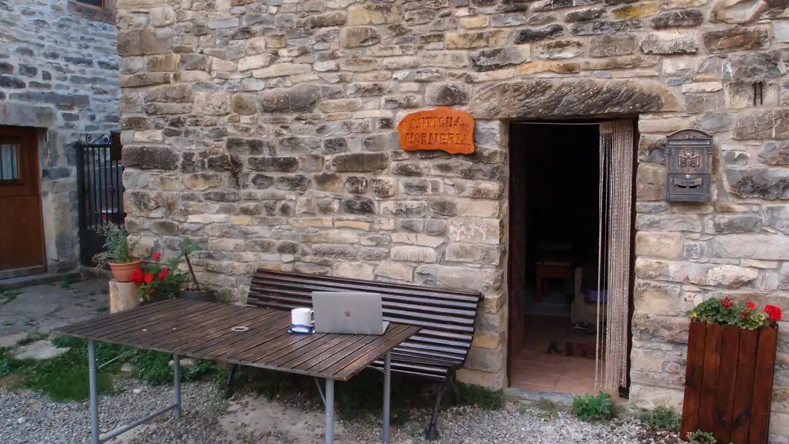

Nowt fancy. Proper websites. Polish builder.
A website you own outright. Live in weeks, not months.
I design, write and hand-code websites for UK businesses that have outgrown rented platforms. One pair of hands, no agency in between — typically three to four weeks from first call to launch.
/* scroll — and the lights come on */
You’ve outgrown your digital real estate.
Most established businesses rent their websites: thirty pounds a month to a US corporation for a template that loads like a tractor — or agency purgatory, waiting on a junior account manager to reply to an email.
You don’t need a discovery workshop and a “circle back to...”, you see? You need a Polish craftsman who turns up, does the job meticulously, and leaves no mess behind.
The process — four steps.
- You share the raw materials.
Word docs, phone photos, midnight voice notes, the half-finished copy you wrote for the last designer. It doesn’t need to be tidy. Extracting your message and writing the UK English copy is my job — you won’t write a word if you don’t want to.
- One proper conversation.
No timer, no worksheet. Then one strategic blueprint agreed on before a single line of code is written.
- I engineer the build.
Custom-coded HTML and CSS, self-hosted fonts, a palette drawn from your brand, zero page-builder bloat. All looking neat and professional. You review on a private staging link, on your own phone.
- I launch and hand over.
Cloudflare’s global network: sub-second load times, automatic SSL, and almost no attack surface — a static site has no database or plugin layer to exploit.
24 kilobytes versus 5 megabytes.
A typical page-builder site makes your visitors download megabytes of framework and plugin code before the headline even appears. My last build shipped 24 KB of hand-written CSS and JavaScript — the whole site, fonts aside, is lighter than a single stock photo.
It loads on a patchy connection in the Dales. It doesn’t break when a plugin updates. It never charges you rent. It works.
You own it. Outright. Forever.
The code, the domain, the infrastructure — plain files in a repository, in your name. If a double-decker bus crashes into me tomorrow, your website doesn’t notice.
That is the whole business model, and this page is built the same way — view source if you like.
Proof: The Unrushed Mind.
A psychology-led coaching practice needed out of Wix, and into something that actually felt unrushed — before her next workshop. Day 1 conversation to a live site on Day 3: 24 KB of hand-written code, zero email downtime, every legacy URL mapped, hosting at £0 a month.
Fixed prices, published openly.
The Authority Build
From £2,800 · typically 3–4 weeks
One proper conversation, all the copy written for you, design, code, polish, SEO/GEO for 2027, and launch. You never face a blank page. The result is a bespoke website like no other. The words alone are a £900–£1,300 job at UK copywriting rates — here they’re in the price, not on top of it.
The Platform Escape
From £3,500 · typically 3–4 weeks
Everything above, plus zero-downtime email migration, every old URL mapped, and the platform cancelled for you — retention maze included. This is for you if you want to move away from generic and outdated Wix, Wordpress, or Squarespace.
The Executive Teardown
£500
An intelligent five-page audit of your current site. Credited in full if you hire me to build for you; yours to keep if you don’t.
The Authority Retainer
£200/month · or £2,000/year
“I can’t be bought, but I can be hired.” Hosting, monitoring, updates within 48 hours, GBP optimisation, and a quarterly review of how you appear in online searches and in AI-chatbot answers. Not a text-updates retainer (£50–£150/month elsewhere) — stewardship of how you appear, in search results and in AI answers.
Every build: 50% to book the slot, 50% on launch day. No net-30, no chasing invoices.
Not every job is a Proper Pages job. If yours needs an online shop, or something you’ll update daily, I’ll tell you straight — and point you to someone who does that better.
Questions, answered straight.
Do I need to write my own copy?
No. Most clients send Word docs, voice notes, or nothing at all. Extracting your message and writing the UK English copy is my job — you won’t face a blank page.
How much does a hand-coded website cost?
From £2,800 for a unique, bespoke build, from £3,500 if you’re escaping a rented platform. £500 gets you an intelligent audit first. No hourly rates, no scope creep, no surprise invoices.
How is this different from Wix, WordPress, or Squarespace?
Those platforms rent you a template and charge monthly. I hand-code a site you own outright — the code, the domain, the infrastructure. My last build shipped 24 KB of code and loads in under a second on 4G. A typical page-builder site makes visitors download megabytes before the headline appears.
What happens to my email when I move away from my current platform?
Nothing changes. In a recent migration I did for a Client, Google Workspace email was preserved — MX, SPF and DMARC replicated record-for-record. Zero downtime; the inbox never noticed.
What if I need an online shop or daily updates?
Then I’m not your builder, and I’ll tell you straight — then point you to someone who does that better. Not every job is a Proper Pages job.
What happens if you disappear?
Your website doesn’t notice. The code, domain and infrastructure are plain files in a repository, in your name. You hire any developer and carry on — no rebuild, no ransom, no platform lock-in.
The Polish builder of proper websites.
I’m Tomasz. In the UK, the Polish no–BS builder is an archetype: highly skilled, meticulously tidy, entirely immune to cowboy nonsense. That is the standard I work to — in code.
One pair of hands, start to finish: the person who answers your first message is the person who will write your copy, code your site, adjust, and send the invoice. I take on only five clients a month, maximum, so that I can keep my communications with you helpful and sweet and the work completed fast. I keep UK hours from Jaca, in the Spanish Pyrenees, and invoice in pounds with reverse-charge VAT wording your finance team will recognise.

Let’s build something proper.
WhatsApp, email, or a call: you get me, directly, and I reply the same working day, eight to four your time. I’m an hour ahead in Spain, which mostly means I’ve read your message before you’ve finished lunch.
“Hi Tomasz — I run [business] in [town]. Here’s my site: [url]. The thing that bothers me most is [one heart-felt sentence].”
That is genuinely all I need to come back with a fixed price and a date within 48 hours. (If my diary is full, I’ll tell you when the next slot opens.)